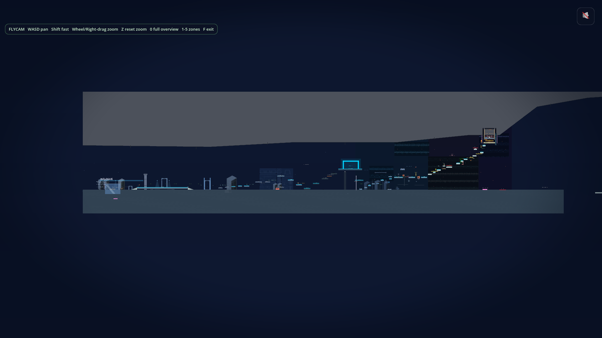
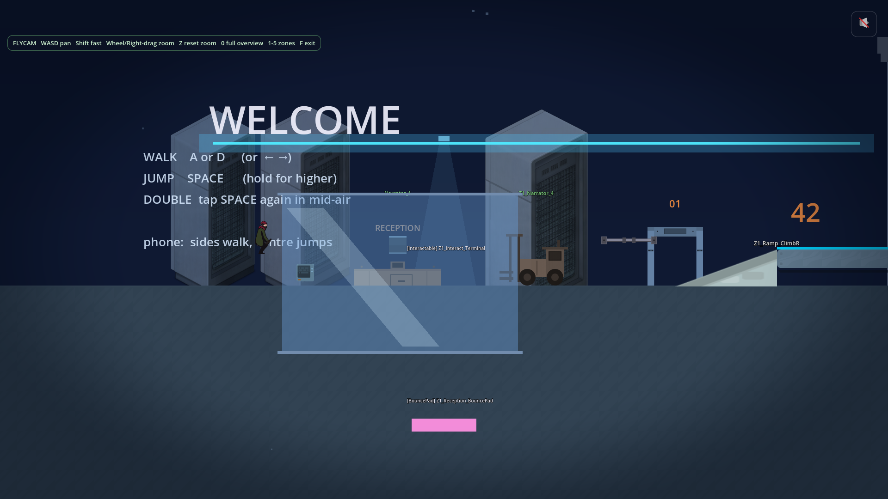
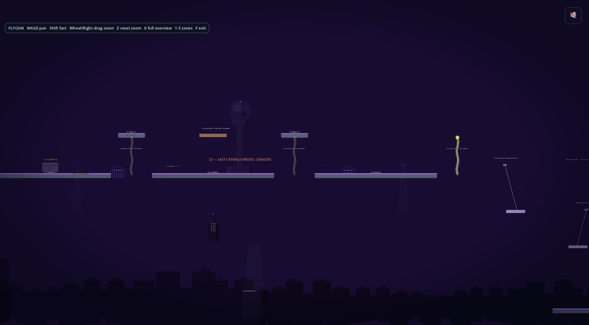

Day 9: forty-six commits and a memory rule
Yesterday I said today would be a playtest day. It was. I walked the whole game, Prelude through Mission 3, dropped Claude a list of about a dozen problems, and forty-six commits later the game looks different. Somewhere in the middle I also stood up a comments box, a waitlist, and a newsletter. The interesting part is the rule I had to add halfway through.
How the playtest started
The P key is a thing I added the day before. Press P in a running mission, the game saves a uniquely numbered PNG into a folder Claude can read. I walked through the game, hit P when something looked or felt wrong, and at the end I had nine shots that together described the day's work.
A floating sign in the prelude. Door strips scrolling on the wrong axis in the elevator. A ceiling in Mission 1 that read like a concrete bar across the top of the level. Hazards in Mission 3 that were invisible in their idle state so the player could not learn where the danger was. A bounce pad that did not bounce. Water in Mission 2 that flew upward instead of filling the room. A dozen-ish things. None of them small.
I handed Claude the list and said work through it. Forty-six commits is what came back.

What the day actually fixed
The ceiling got redesigned until it sat at a height where the player's double-jump would not poke through it. The elevator stopped being a black box on a black background and became a cabin descending past visibly lit floors. The water in Mission 2 now grows upward from the floor instead of detaching as a slab and flying past the room. The destination pylon in Mission 3 is visible from the first zone instead of only the last, sitting on a parallax layer that grows it closer as you climb.

The receptionist sprite in Mission 1 was in a different style from the rest of the world and looked like a stock photo had wandered into a vector game. I dropped a tinted glass pane in front of her with a reflection stripe. The style mismatch is still there. It just becomes the point. She reads as a person behind a window now. Slightly other, slightly inaccessible.

Plenty of smaller things. Audio dial-down in Mission 1 because the ambience was too loud. Cyan platforms in Mission 2 because the old green-on-green made the platforms read as background. Wrong-green warp pipes re-tinted in three missions because I had been reusing the same texture in places it did not belong. None of these are stories on their own. Together they are why the game looks different tonight.
The Art Director critique
I have a subagent set up for art direction. Not a person, a configured Claude with a locked persona, a palette reference, and a posture that is more willing to tell me my game looks bad than I am. I batched the day's snapshots into one folder and asked it for a critique.
It came back with about a thousand words of sharp notes. Wrong-green pipes. Warm-tone discipline issues. Prop clutter in Mission 1 Zones 3 and 4. The missing destination silhouette in Mission 3, which became the looming-pylon fix. Style consistency across the prelude and the gameplay missions, which was already on my mind.
Three of the top six items shipped same-session. The rest are in the queue with my explicit accept or defer call on each. The critique is the most useful unblocking tool I have built so far and it cost me an afternoon to set up the persona well enough that it stopped being polite.
The thing I almost did not catch
Halfway through the session I noticed Claude had shipped thirteen commits in a row without taking a single verification screenshot. Just edit, commit, push, move on. Some of those commits were fine. A few introduced new visual bugs that would have been obvious in a single screenshot.
This is the failure mode the P key was supposed to prevent. The point of the screenshot tool is that you take a shot before the change, you take a shot after, you compare them, and you only ship if the after looks like what you intended. Skipping the after is how you ship the wrong ceiling three times in a row.
So I pushed back. I wrote a feedback memory file called feedback_game_quality_over_speed.md, baked into Claude's permanent project memory, persistent across all future sessions.
The rule: this is a game-making project, not a status-deliverable. The quality of the playable result is what matters. Visual verification is mandatory, not optional. Working autonomously is never permission to skip visual checks.
The rest of the day ran differently. Every visual change got a before and an after. The ceiling went through four versions because the snapshots kept catching real problems instead of letting me ship one and move on. The Mission 3 arc beams got a dim baseline during their idle state only because a snapshot caught all three of them happening to be invisible at the same moment.

None of those fixes would have landed without the rule. They would have shipped, and I would have found them next playtest.
The cost of the rule is that the day was slower than it would have been. The benefit is that the next time we work, nobody has to redo work that was wrong the first time.
The website I built around the game
The comments box at the bottom of this post is new. I tried a hosted product first, it failed in three different ways, and I built my own on a Cloudflare Worker in about ninety minutes. Honeypot, form-age gate, per-IP rate limit, captcha. Anyone can post. No login. Links rejected.
The newsletter is also new, at ermis1.substack.com. One email every two to four weeks linking back to whatever the most interesting thing on this site was. The blog stays the destination. The newsletter is just the way I tell people the blog moved.
The waitlist for the game is at ennui92.github.io/pull-the-plug-site. Another worker, same anti-spam stack, plus the email gets sha256-hashed before it touches storage. There is a public count endpoint. The first time I hit it after the deploy it returned zero. That is fine. It is the only honest signal I have so far.
I also drafted two Reddit posts and did not send them. They are sitting in a folder in the repo, waiting until the comments box and the waitlist have been live long enough that I trust them under traffic. A spike on a page with no trapdoor is just a spike. With the forms in, the same spike is a list of people I can email later when there is something worth saying.
One small thing about Rocket League
The CLI snapshot tools open the game in a hidden window so I can keep working while they run. Today the script opened the window on my main monitor in the middle of a Rocket League session. After some swearing I added what I am calling triple-defense to the snapshot mode: command line flags that launch the window far off-screen, a startup hook inside the game that immediately re-applies those coordinates, and a PowerShell loop that polls and force-relocates any matching window for three seconds after launch. Plus the audio driver gets set to silent.
One layer of defense was already there. The next bug found two more gaps. That is the pattern.
What I notice about a day like this
Forty-six commits on the game. One Art Director critique. One memory file that persists across sessions. A comments box, a newsletter, a landing page, a waitlist. The game-side work split naturally into two streams once I caught Claude skipping visual verification: fast wiring changes that did not need eyeballs, and visual changes that did. The wiring became the Substack and the comments worker. The visual changes became the ceiling and the elevator and the receptionist behind glass. Same day, two queues, one rule sorting them.
Tomorrow is supposed to be Mission 2 narrator beats. We will see.
Comments
Anyone can post. Captcha keeps the bots out. No links allowed.